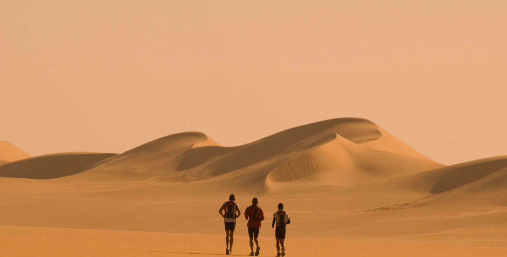

CABRERÈS MM - MARATÓ
Montaña en Esquirol
Catalunya | Barcelona
42.5 km en 4 h. 1 min. 42 s.
SALOMON ULTRA PIRINEU
Montaña en Bagà
Catalunya | Barcelona
110 km en 17 h. 41 min. 55 s.
CURSA URBANA CENTELLES AMB EL SÀHARA
Asfalto running en Centelles
Catalunya | Barcelona
10 km en 35 min. 3 s.
CAMES DE FERRO
Montaña en san Esteve d'en Bas
Catalunya | Girona
42 km en 5 h. 13 min. 7 s.
5A CURSA DE MUNTANYA
DEL VOLTREGANÈS
Montaña en Sant Hipòlit de Voltregà
Catalunya | Barcelona
42 km en 4 h. 33 min. 2 s.
TRAVESS NÚRIA-QUERALT
Montaña en Santuari de Núria
Catalunya | Barcelona
95 km en 14 h. 25 min. 24 s.